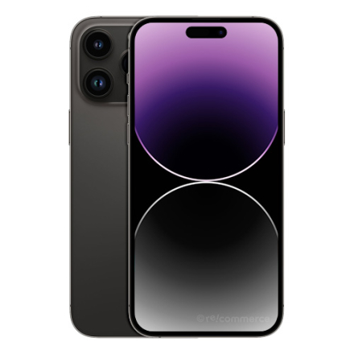

Apple iPhone 14 ProMax
iPhone 14 Pro Max préparé et entièrement testé par des professionnels avec 256 Go de stockage en Space Black. L'appareil est techniquement en parfait état et est prêt à être utilisé immédiatement.
Informations techniques
Reconditionné professionnellement.
L'appareil a été professionnellement préparé, vérifié et entièrement testé par Mujitech. Dans le cadre de la préparation, l'écran, la batterie et la vitre arrière ont été remplacés.
Face ID, caméras, haut-parleurs, microphone, Wi-Fi, Bluetooth, fonctions cellulaires et de chargement ont été vérifiés. L'appareil sera à nouveau entièrement vérifié avant l'expédition.
Informations transparentes.
Étant donné que des composants individuels ont été remplacés, l'iPhone peut afficher une note correspondante concernant un composant remplacé ou non vérifié sous Paramètres. Cela n'affecte pas la fonctionnalité de l'appareil.
Garantie de 12 mois.
Vous bénéficiez d'une garantie Mujitech de 12 mois sur la technologie de cet appareil. Sont notamment exclus les chutes ultérieures, les liquides ou autres dommages externes ainsi que l'usure normale.